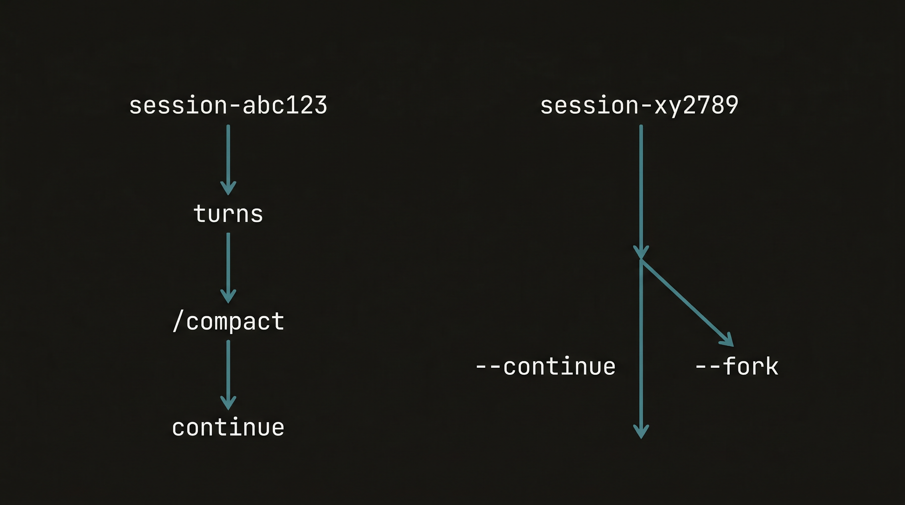

TL;DR
I started using Claude Code the way everyone does — as a chatbot. The context got messier and messier, I added more tools but got worse results, my rules grew longer and less effective. After digging deep into how the system actually works, I realized this wasn't a prompt problem. It's a system design problem.
Most of the times I got stuck had nothing to do with the model being insufficiently capable. It was almost always that I gave it the wrong context, or it produced something I had no way to validate, or there was no way to roll back. These are engineering problems.
The core insight: Claude Code's 200K context is not fully available. Fixed overhead — system prompts, skill descriptors, MCP server tool definitions, LSP state — consumes roughly 15–20K tokens. Connect 5 MCP servers with 20–30 tools each at ~200 tokens per definition and you've spent 25,000 tokens (12.5%) before writing a single line of code.
The Five Key Surfaces
The real framework for thinking about Claude Code is not "better prompts" — it's five distinct design surfaces, each with its own concerns:
What information is always-on vs. loaded on demand — CLAUDE.md, rules, memory, skills. What Claude always sees vs. what gets pulled in when needed.
What actions Claude currently has available — built-in tools, MCP servers, plugins. The total action space Claude can reason about in this session.
Which actions require confirmation, can be blocked, or must be audited — permissions, sandbox, hooks. This is your circuit-breaker layer.
Which tasks need to run in a smaller, isolated context — subagents, worktrees, forked sessions. The key value is isolation, not just parallelism.
How you determine a task is complete and the result is trustworthy — tests, lint, screenshots, logs, CI. Without this there's no engineering, only vibe-checking.

Context Economics
The 200K context window isn't a blank canvas. You're always working with overhead you can't see.

Compaction Strategy
For task switching, prefer /clear. For entering a new phase within the same task, use /compact.
The compaction trap: Default compaction uses a "re-readable" heuristic — early tool output and file content gets dropped first. This sounds reasonable until you realize that architectural decisions and constraints live in that early content. Write your Compact Instructions in CLAUDE.md to explicitly control what survives compression.
# In your CLAUDE.md — Compact Instructions
When compacting, ALWAYS preserve:
- The current task goal and acceptance criteria
- Architecture decisions made this session
- Any constraints or NEVER-DO items surfaced in this task
- The current file under active modificationPlan Mode
Execution costs happen after the plan is confirmed. For complex refactors, migrations, and cross-module changes, this is dramatically more valuable than "let's see the code first." Hit Shift+Tab twice to enter Plan Mode.
Advanced: AI Reviews AI
The most powerful pattern: open one Claude to write the plan, then open a second instance (or use Codex) to review that plan in the role of "senior engineer." Let the AI audit the AI. The quality difference is significant — the reviewer finds edge cases the planner normalized over.
Keyboard shortcut: Shift+Tab × 2 → Plan Mode. Claude writes a plan, waits for explicit approval before touching any files.
Skills Design: Not a Template Library
The official description of Skills is "on-demand knowledge and workflows." The descriptor lives in context always; the full content loads only when invoked. Think of Skills not as stored prompts but as workflows that activate when relevant.
Run before release to ensure nothing is missed. Examples: pre-deploy verification, security audit checklist, API contract check before merging.
High-risk, standardized processes like config migration — explicitly invoked with built-in rollback steps. The Skill encodes the safe procedure, not just the goal.
disable-auto-invoke Strategy
Anti-patterns
- Descriptors that are too short (Claude can't tell when to invoke it)
- Skill body that is too long (wastes context on every load)
- One Skill that tries to cover review / deploy / debug / docs / incident — five jobs for one Skill
- A Skill with side effects that allows auto-invoke by the model
Tool Design: How to Make Claude Choose Correctly
Tools for Claude are fundamentally different from APIs written for humans. Evolution through three generations:

| Version | Approach | Problem |
|---|---|---|
v1 |
Add a question parameter to an existing tool |
Claude mostly ignores it or treats it as optional metadata |
v2 |
Require Claude to output a specific markdown format; parse it externally | External parser is brittle; any format variation breaks it |
v3 |
Dedicate an AskUserQuestion tool — Claude must explicitly call it to ask anything |
None. Significantly better than both prior versions. |
The principle: If you want Claude to stop and ask, give it a dedicated tool whose only job is stopping and asking. Don't embed intent in parameters of unrelated tools.
Hooks: Re-Claiming Determinism
Hooks are easy to think about as "scripts that run automatically." But the more useful mental model is: Hooks are the mechanism to move certain things out of Claude's discretion and back into deterministic control.

Supported Hook Points
| Hook Point | When It Fires | Primary Use |
|---|---|---|
PreToolUse |
Before tool execution | Block writes to protected files; inject dynamic context at session start |
PostToolUse |
After successful execution | Auto-format / lint / lightweight validation after every Edit |
PostToolOnFailure |
After a tool execution fails | Log failure details; trigger rollback procedures |
Notification |
When notifications are sent | Push to external channels (Slack, system notifications) |
UserPromptSubmit |
When user submits a prompt | Sanitize input; inject user-specific context |
Hooks vs. Skills — The Division of Labor
Skills tell Claude in what order to run tests, how to read failures, and how to fix them. Hooks enforce hard constraints on critical paths — blocking when necessary, completely outside Claude's discretion.
What Hooks Are Good For vs. Not
- Blocking writes to protected files
- Auto-formatting / linting after every edit
- Injecting dynamic context after SessionStart
- Sending notifications after task completion
- Complex semantic judgment needing large context
- Long-running business logic processes
- Anything that requires Claude's own reasoning
Subagents: Send a Separate Claude to Do One Specific Thing
A Subagent is an independent Claude instance spun out from the main conversation. It has its own context window, only the tools you specify, and reports back results when done. The core value is isolation, not parallelism.
Claude Code ships three built-in subagent types:
- Explore — read-only repository scanning, runs Haiku to save cost
- Plan — structured planning with clear articulation of reasoning
- General-purpose — fully configured, full-capability agent
Configuration Best Practices
Always explicitly constrain your subagents. Don't leave them with the full tool surface of the parent session:
# Subagent configuration
tools: ["read_file", "search_code"]
disallowedTools: ["write_file", "run_command", "git_push"]
model: "claude-haiku-4-5" # Cost-saving for exploration tasks
maxTurns: 10
isolation: worktree # Fully isolated git worktreeKey insight: Use subagents not just when you want parallelism, but whenever a task benefits from a clean, isolated context window with no accumulated noise from the main session.
Prompt Caching: Prefix Matching
Prompt caching works by prefix matching. Claude Code assembles prompts in a fixed order, and anything that changes the early part of that order invalidates the cache for everything that follows.
Common Cache-Busting Traps
- Putting dynamic content (timestamps, user IDs) in the static system prompt
- Non-deterministically shuffling tool definition order between sessions
- Adding or removing tools mid-session
Rule: Never switch models mid-session. Prompt caches are model-specific. Changing the model is the same as starting from scratch.
Verification Loop: No Verifier, No Engineering
Without a verifier, you don't have an engineering agent — you have an autocomplete tool with side effects. Verification has layers, and you want coverage at multiple levels:
Command exit codes, lint, typecheck, unit tests — zero-cost signal, no excuses for skipping
Integration tests, screenshot comparison, contract tests, smoke tests — validates real behavior, not just type signatures
Production log validation, monitoring metrics, manual review checklists — the real world is the ultimate verifier

Session Continuity & Parallelism
| Command | Behavior |
|---|---|
claude --continue |
Resume the current directory's last session |
claude --resume |
Open a picker to select from session history |
claude --continue --fork |
Branch from an existing session checkpoint |
claude --worktree |
Run in a fully isolated git worktree |
claude -p "prompt" |
Non-interactive (headless) mode |
claude -p --output-format json |
Structured JSON output for piping |
Useful Commands You Didn't Know About
Three-dimensional review of just-modified code: readability, correctness, and redundancy. Run it after every significant change.
Not "undo" — this returns to a session checkpoint and re-summarizes from there. Useful when you need to revisit a branch of decisions.
Ask a quick question without interrupting the main task flow. The question is noted; the main task resumes immediately.
claude -p --output-format stream-json — real-time JSON event stream. Pipe it into your own tooling for custom observability.
CLAUDE.md Design

- How to build / test / run the project
- Key directory structure and module boundaries
- Code style and naming constraints
- Environment variable blocks
- Absolute prohibitions (NEVER list)
- Compact Instructions — what must survive compression
- Long background introductions
- Complete API documentation
- Vague "be careful" principles
- Information Claude can infer from the codebase
- Background material for tasks that happen once a month
Self-maintaining tip: When Claude makes a mistake that should never repeat, tell it: "Update your CLAUDE.md so you don't make that mistake again." Letting Claude maintain its own instruction file works remarkably well in practice.
Recent Experience: Building Kaku
Over the Spring Festival holiday, I built Kaku: an open-source terminal project using Claude Code. The underlying stack is Rust + Lua with embedded AI capabilities. Several lessons surfaced that apply well beyond this specific project:
Environment transparency matters more than you think. Claude Code calls real shell, real git, real package managers, and your actual local config. This is the source of both its power and its footguns.
Architecture and workflow should be fully decoupled. Global constraints in CLAUDE.md, path constraints in rules/, workflows in skills/ — when these are separate files with single responsibilities, the system is much easier to reason about and update independently.
Three Stages of Claude Code Usage

The Stage 1 → 2 shift is about moving from ad-hoc prompting to structured collaboration. The Stage 2 → 3 shift is a genuine phase transition — you stop optimizing individual interactions and start designing the constraints, workflows, and verification loops that allow autonomous operation.
The Definability Test
These are six months of hard-won lessons — there's certainly more ground I haven't covered yet. If you've found techniques that work well and aren't here, I'd genuinely like to hear them.